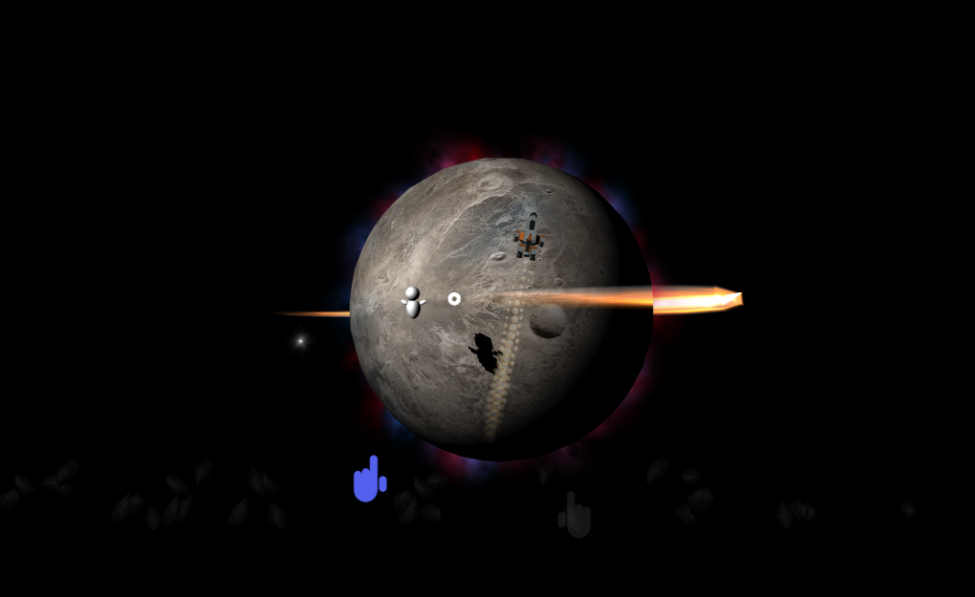
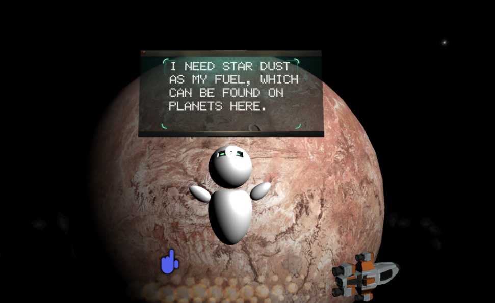
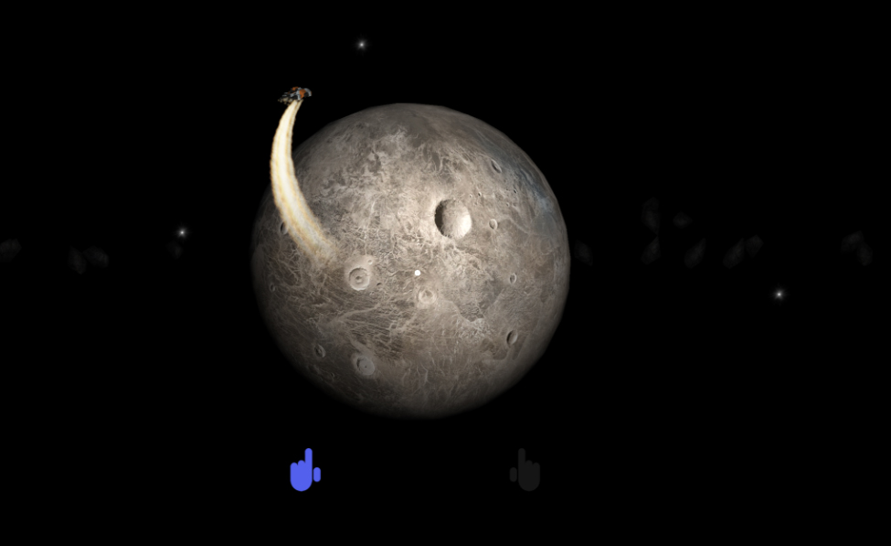

In the void
Engine: Unity Platform: Hololens Duration: 2 weeks Language: C#
The guest flies a spaceship through a galaxy in their own room using just their gaze! Their goal is to help a robot collect enough star dust from the nearby planets to return home, while enjoying an out-of-this-world experience.
In The Void is a Microsoft HoloLens game in which the guest starts in the center of a galaxy filled with planets all around them. A spaceship follows their gaze as they walk and turn through this space, and looking at a planet causes the spaceship to fly towards and orbit that planet. A robot character approaches the player with a request to collect "star dust" from particular planets, and to do so the player must orbit the planet that the robot visits for a short period of time. After all of the necessary planets are visited, the robot opens a wormhole that the player can send their spaceship through if they want to join the robot back at its home planet. The experience is very relaxing and free, with most of the mechanics being based on the spaceship-gaze controls. The tracking works well even in low light because we don't have it paired with anything in real life, so a little bit of drift doesn't cause any issues.


